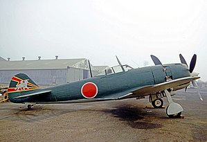

The Ki-84 is generally considered the best Japanese fighter to operate in large numbers during the conflict. The aircraft boasted high speed and excellent maneuverability with an armament (up to two 30 mm and two 20 mm cannon) that gave it formidable firepower. Armament comprised two fuselage-mounted, synchronized 12.7 mm (.50 in) machine guns — these proved challenging to synchronize properly with the Hayate's four-blade propeller — and two wing-mounted 20 mm cannon, a considerable improvement over the two 12.7 mm (.50 in) machine guns used in the Ki-43 Hayabusa.
